设置机器人头像和介绍语
头像设置：
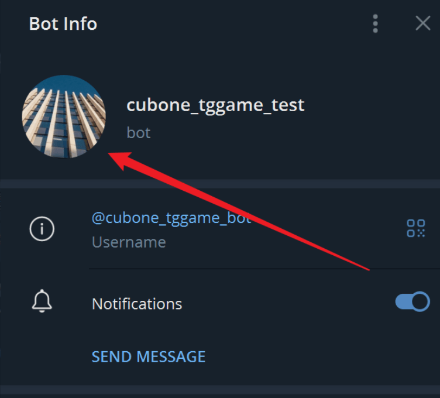
步骤1
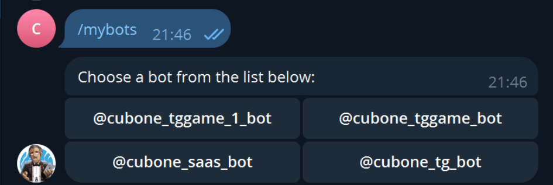
步骤2
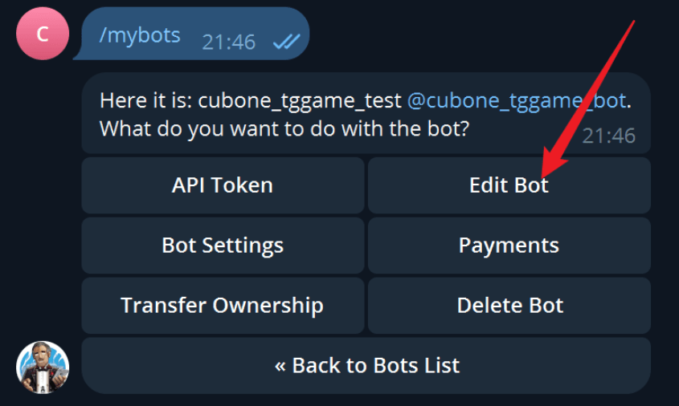
步骤3：
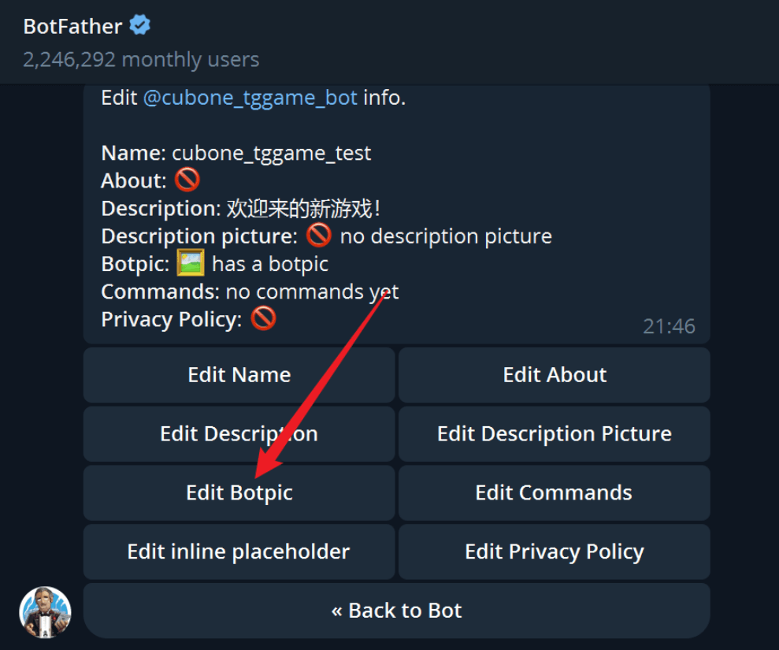
介绍语设置：
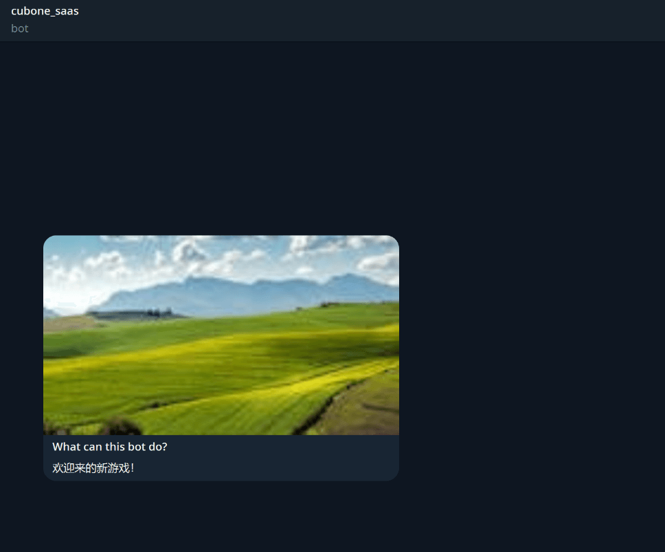
按如下步骤操作。
1、首先执行/mybots，淡出机器人列表，如下图。点击你想编辑的机器人。
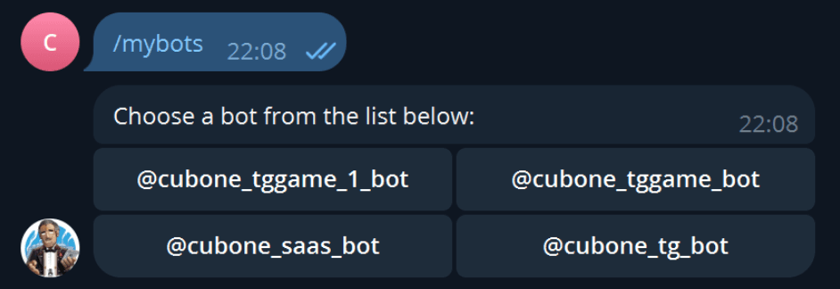
2、点击后，即可开始设置机器人，如下图。选择“Edit Bot"。
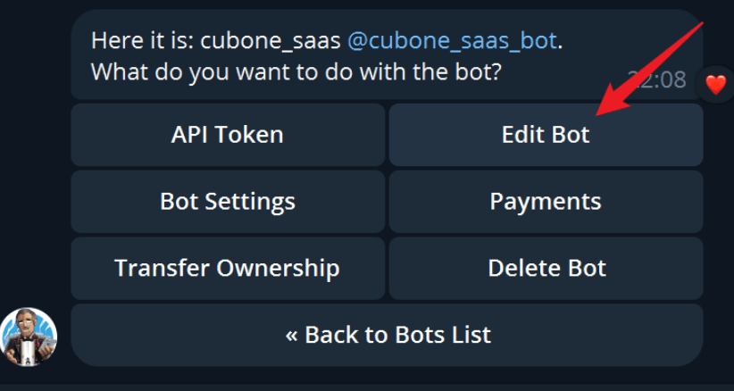
3、进入编辑页面，点击”Edit Description“。如下，按提示输入一段文本。
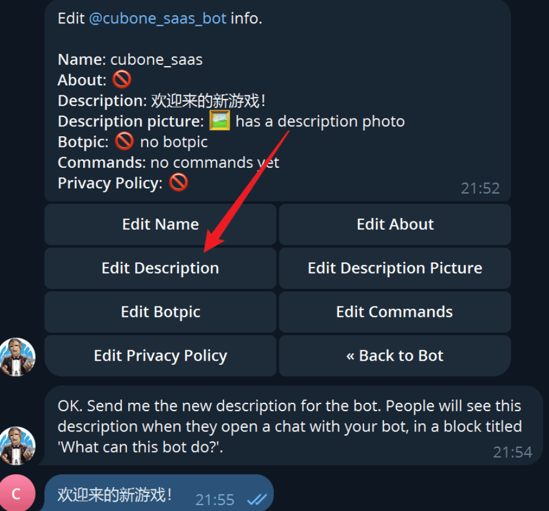
4、然后点击“Edit Description Picture”，设置图片。
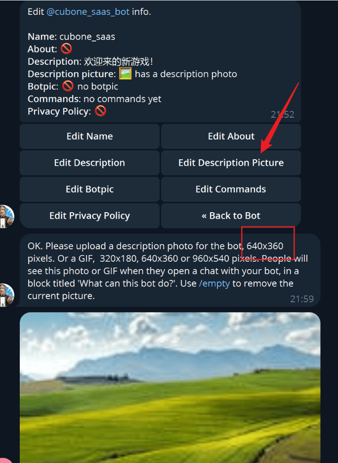
设置机器人一键邀请
1、点击/mybots
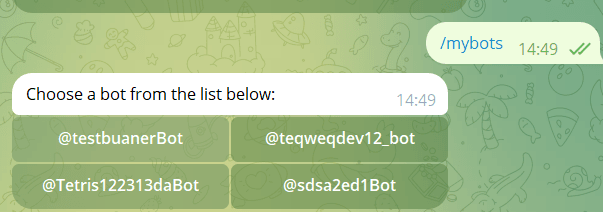
2、选择Bot Settings
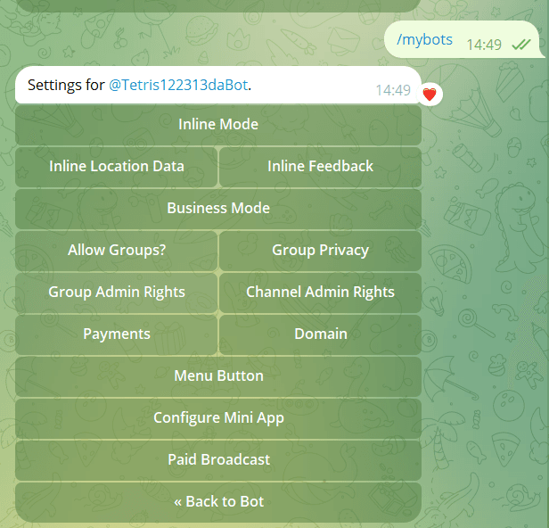
3、选择【inline Mode】 ，然后选择 【turn on 】
效果
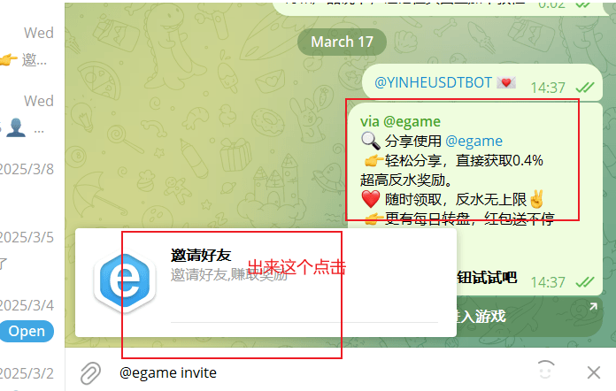
TG机器人对话窗口展示的“打开”配置教程
- 单币种并且没有绑定功能，点击start，后端会自动注册账号，然后打开open按钮的时候，然后登录成功。
- 多币种或者有绑定功能的，打开open按钮的时候，提示：请先在TG机器人注册或绑定账号后再打开
关于绑定账号界面如下图：
关于open的设置
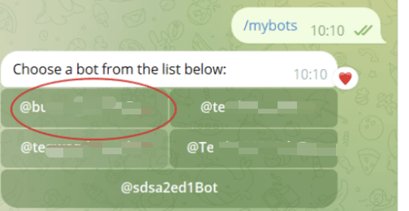
选择机器人
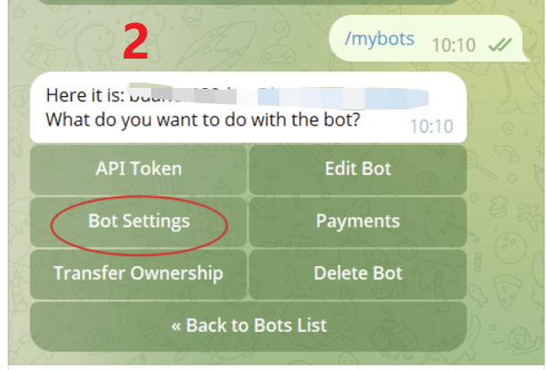
选择设置
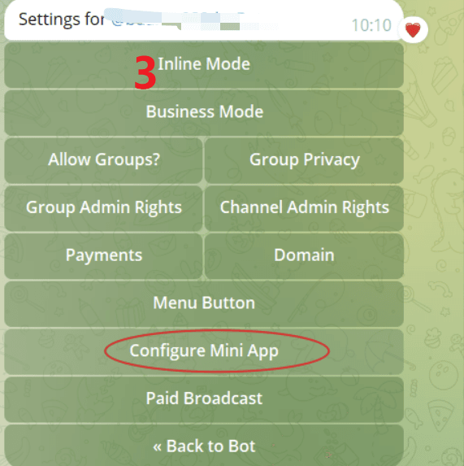
机器人配置
机器人介绍
机器人介绍必须填写，若为空会导致业主机器人“/Start”无反应
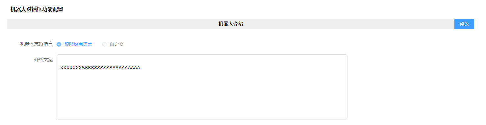
欢迎语
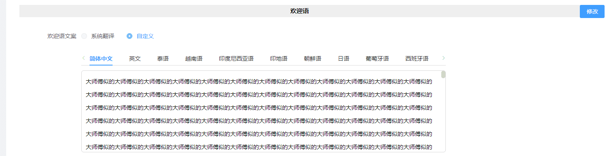
绑定账号
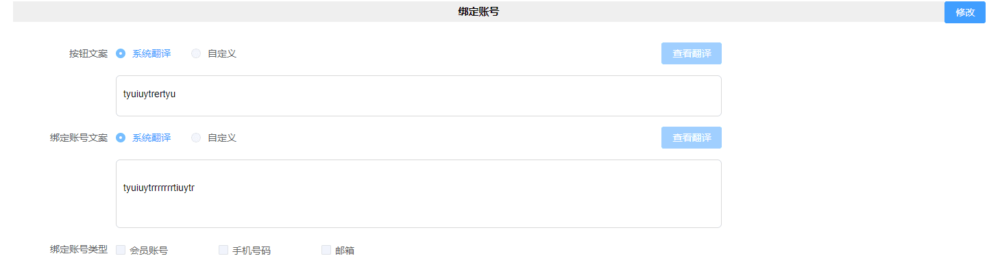
账号信息
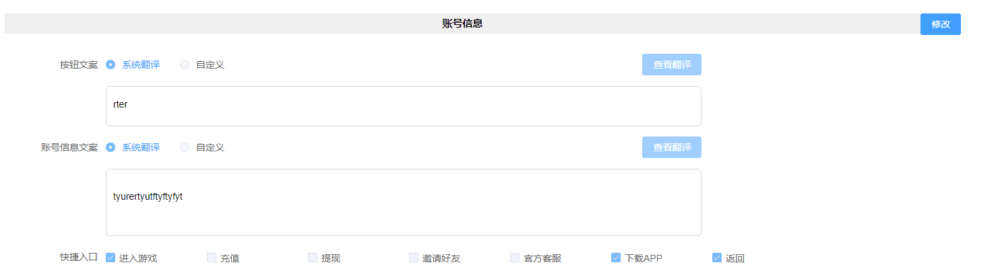
充值页面
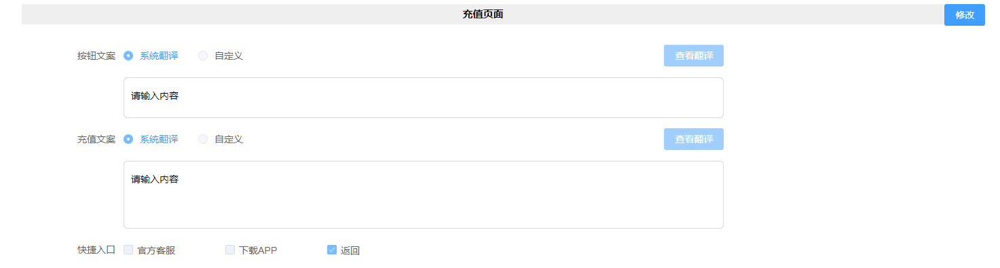
提现页面
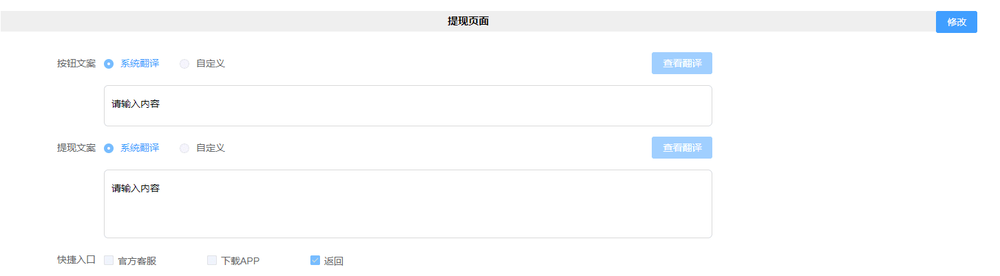
邀请好友
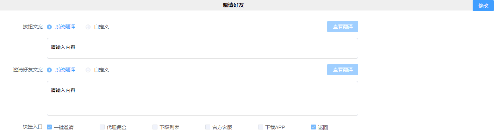
代理佣金：
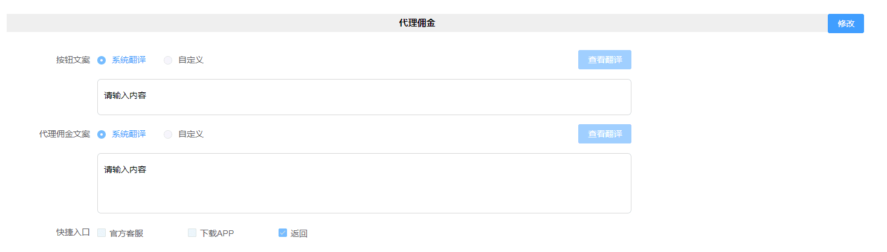
下级列表
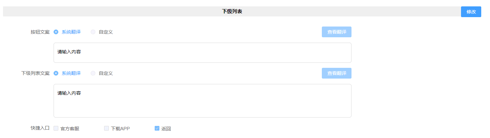
官方客服
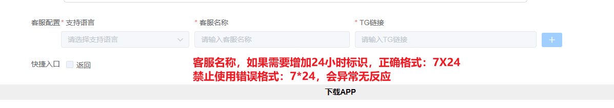
下载APP
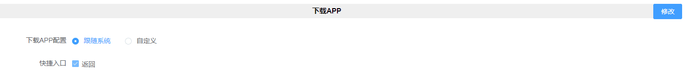
对话框底部快捷入口
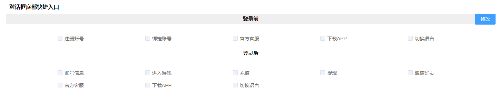
自定义按钮功能
TG机器人配置-自定义按钮-支持直达具体活动页面。
同活动统一跳转方式保持一致：优惠分类 > 活动/任务类型 > 具体活动类型 > 活动/任务名称(ID)
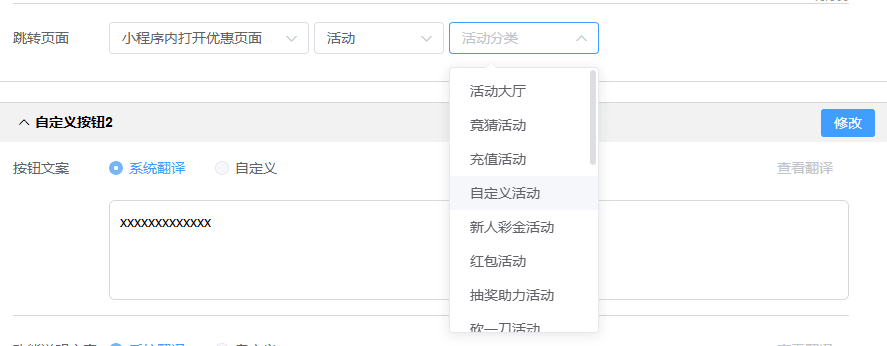